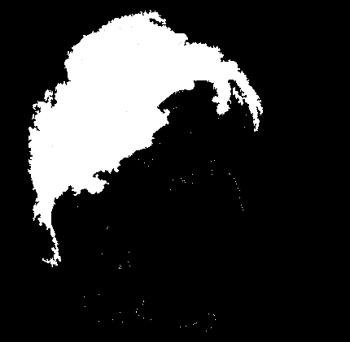

<!DOCTYPE html>
<html lang="ja">
<head>
	<!--[if lt IE 9]>
		<script src="http://html5shiv.googlecode.com/svn/trunk/html5.js"></script>
	<![endif]-->
	<meta charset="UTF-8">
	<title>backspace to enterkey::backspacetokyo ⌫</title>
	<meta name="keywords" content="backspacetokyo, backspace, satoruhiga, motoishmz, 2bit">
	<meta name="description" content="backspacetokyoに訪れたアーティスト/デベロッパー/ハッカーを囲んで話をしたり、交流する事を目的にしたイベント。">
	<meta name="robots" content="index,follow">
	<meta name="format-detection" content="telephone=no">
	<meta name="viewport" content="width=device-width">
	<link href="./enterkey.css" rel="stylesheet" type="text/css">
	<link href="./enterkey.mobile.css" rel="stylesheet" type="text/css">
	<!-- begin og -->
	<meta property="og:title" content="backspace to enterkey">
	<meta property="og:type" content="website">
	<meta property="og:site_name" content="backspace to enterkey">
	<meta property="og:image" content="http://backspace.tokyo/backspace.jpg">
	<meta property="og:description" content="backspacetokyoに訪れたアーティスト/デベロッパー/ハッカーを囲んで話をしたり、交流する事を目的にしたイベント。">
	<meta property="og:url" content="http://backspace.tokyo/enterkey/">
	<meta property="og:site_name" content="backspacetokyo ⌫">
	<!-- end og -->
</head>
<body>

<h1><span>Backspace to</span> Enterkey</h1>
 
<hr/>

<ul class="guests">
	<li>
		<span class="tags">
			#1: May 20th, 2015 - @ Kingyo, Ebisu
		</span><br>
		<a href="./1/">
			Jonathan Dahan <span class="aka">@jedahan</span><br>
			Jordi Puig <span class="aka">@wasawi</span>
		<span class="avatars">
			
			
		</span>
		</a>
	</li>
</ul>


<hr/>

<h2>
	このイベントは何？
</h2>

<p class="slogan">
	<a href="../en">backspacetokyo</a>に訪れたアーティスト/デベロッパー/ハッカーを囲んで話をしたり、交流する事を目的にしたイベント。<wbr>
	既にonlineに上がっているプロジェクトの単なる紹介プレゼンテーションでは無く、せっかく外国から来日している彼らの活動や文化・マインドを分けてもらったり、こちらの出来事を伝えたり出来たら良いな、という趣旨で開催をします。短い期間東京で過ごす彼らの新しい友達作りの機会としても機能する事を願っております。<br>
	このイベントは、ゲストが来日したタイミングで適宜開催されます。
</p>

<hr/>

<footer>
	Organized by <a href="../en">backspacetokyo</a>
</footer>

<script>
	(function(i,s,o,g,r,a,m){i['GoogleAnalyticsObject']=r;i[r]=i[r]||function(){
	(i[r].q=i[r].q||[]).push(arguments)},i[r].l=1*new Date();a=s.createElement(o),
	m=s.getElementsByTagName(o)[0];a.async=1;a.src=g;m.parentNode.insertBefore(a,m)
	})(window,document,'script','//www.google-analytics.com/analytics.js','ga');

	ga('create', 'UA-62533129-1', 'auto');
	ga('send', 'pageview');
</script>
</body>
</html>